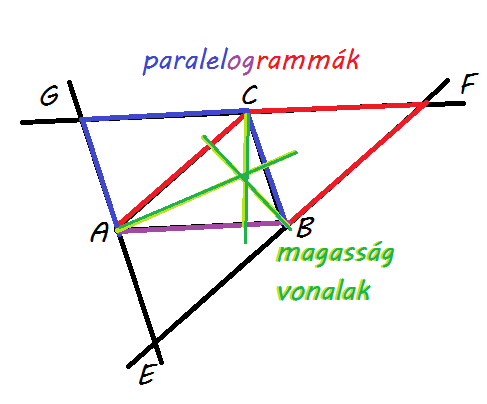

1. húzzunk párhuzamosokat a csúcsokon keresztül a szemközti oldalakkal --> EFG háromszög
(ennek oldalai párhuzamosak az eredeti háromszög megfelelő oldalaival)
2. paralelogrammák segítségével belátható, hogy az eredeti háromszög csúcsai az új háromszög oldalainak felezési pontjai
(pl.: a C pont felező, mert az ABFC paralelogramma és az ABCG paralelogramma AB oldala közös)
3. az új háromszög oldalfelező merőlegesei, az eredeti háromszög ma vonalai
